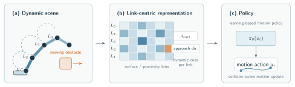

NUS ARC · Ongoing01
Motion Planning for Robot Manipulators in Dynamic Environments
Developing obstacle representations for learning-based motion planning in dynamic scenes, including a link-centric surface-distance grid that encodes obstacle proximity by link segment and approach direction for use as a policy observation.
ManipulationMotion PlanningRL ObservationDynamic Obstacles
Research in progress. Public portfolio intentionally shows the research direction rather than unpublished internal results.